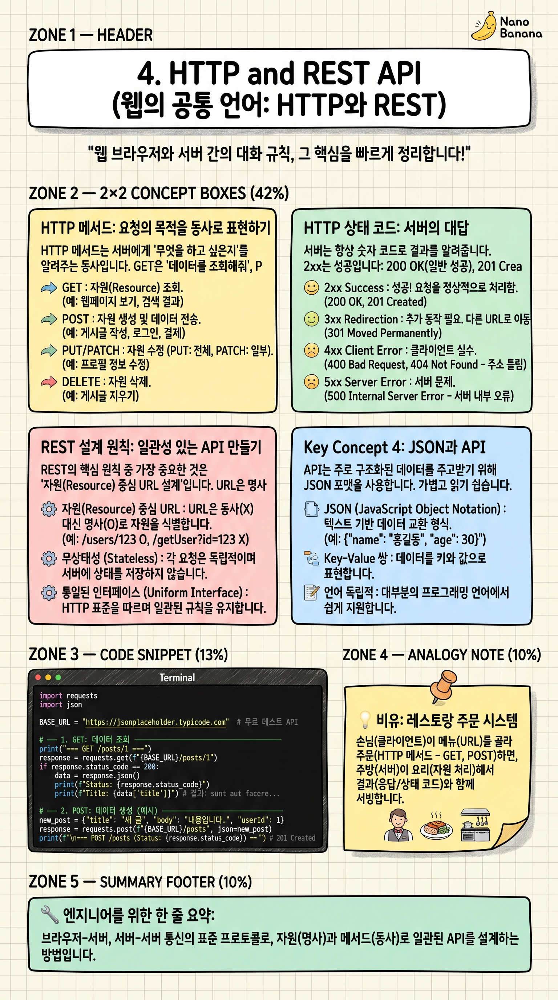

HTTP and REST API

🎯 학습 목표
- GET, POST, PUT, DELETE 메서드의 차이와 사용 시기를 설명할 수 있다
- 200, 201, 400, 404, 500 상태 코드의 의미를 즉시 답할 수 있다
- REST API 설계 원칙에 따라 URL을 올바르게 설계할 수 있다
- Python requests 라이브러리로 API를 호출할 수 있다
HTTP(HyperText Transfer Protocol)는 웹의 기본 통신 규약입니다. 브라우저와 서버, 서버와 서버 사이의 모든 데이터 교환에 사용됩니다. REST API는 HTTP를 이용해 데이터를 주고받는 방식을 표준화한 설계 원칙입니다.
현대 소프트웨어는 대부분 REST API로 통신합니다. 카카오맵 API로 지도 데이터를 가져오고, 공공 데이터 포털에서 코로나 통계를 받아오고, 우리가 만들 AI 분석 서비스에서 결과를 전달하는 것, 모두 REST API입니다.
다음 챕터에서 FastAPI로 REST API를 직접 만들기 전에, 이 챕터에서는 HTTP의 기본 언어(메서드, 상태 코드)와 REST 설계 원칙을 먼저 탄탄하게 이해합니다.
핵심 내용
HTTP 메서드: 요청의 목적을 동사로 표현하기
HTTP 메서드는 서버에게 '무엇을 하고 싶은지'를 알려주는 동사입니다. GET은 '데이터를 조회해줘', POST는 '새 데이터를 만들어줘', PUT/PATCH는 '기존 데이터를 수정해줘', DELETE는 '데이터를 삭제해줘'입니다.
GET은 URL에 파라미터를 붙여 보냅니다(예: /users?age=20). Body가 없습니다. 브라우저 주소창에 URL을 입력하는 것이 GET 요청입니다. POST는 Body에 데이터를 담아 보냅니다. 회원가입, 로그인, 파일 업로드가 대표적입니다.
REST 설계에서 메서드를 올바르게 쓰는 것이 중요합니다. 데이터 삭제를 GET /deleteUser?id=5 처럼 설계하는 것은 잘못된 방식입니다. DELETE /users/5 가 올바른 REST 설계입니다.
HTTP 상태 코드: 서버의 대답
서버는 항상 숫자 코드로 결과를 알려줍니다. 2xx는 성공입니다: 200 OK(일반 성공), 201 Created(새 리소스 생성 성공), 204 No Content(성공했지만 응답 내용 없음). 4xx는 클라이언트 오류입니다: 400 Bad Request(잘못된 요청), 401 Unauthorized(인증 필요), 403 Forbidden(권한 없음), 404 Not Found(리소스 없음).
5xx는 서버 오류입니다: 500 Internal Server Error(서버 내부 오류), 502 Bad Gateway(중간 서버 오류), 503 Service Unavailable(서비스 다운). '502 Bad Gateway'를 보면 FastAPI 서버가 아직 안 뜬 것입니다.
좋은 API는 상태 코드를 정확하게 사용합니다. 삭제 성공에 200 대신 204를, 생성 성공에 200 대신 201을 쓰는 것이 올바른 REST 설계입니다.
REST 설계 원칙: 일관성 있는 API 만들기
REST의 핵심 원칙 중 가장 중요한 것은 '자원(Resource) 중심 URL 설계'입니다. URL은 명사로 표현하고(users, videos, analysis), 동사는 HTTP 메서드로 표현합니다. /getUser 대신 GET /users/{id}, /createUser 대신 POST /users 처럼 씁니다.
무상태(Stateless) 원칙: 각 요청은 독립적이어야 합니다. 서버는 이전 요청을 기억하지 않습니다. 인증 정보(토큰)는 매 요청마다 헤더에 포함해야 합니다. 이 덕분에 서버를 쉽게 여러 대로 늘릴 수 있습니다(수평 확장).
계층적 시스템: 클라이언트는 중간에 로드 밸런서, 캐시 서버, CDN이 있어도 신경 쓰지 않습니다. 단순히 URL로 요청하면 됩니다. 이 계층화 덕분에 대규모 시스템이 유연하게 확장됩니다.
💡 비유로 이해하기
HTTP 통신은 레스토랑 주문과 완벽히 비유됩니다. URL은 메뉴판의 항목 번호입니다(/users/5는 '5번 테이블 고객 정보'). HTTP 메서드는 주문의 종류입니다: GET은 '메뉴 보여줘', POST는 '새 주문 추가', PUT은 '기존 주문 변경', DELETE는 '주문 취소'.
상태 코드는 웨이터의 응답입니다. 200은 '네, 준비됐습니다', 404는 '죄송합니다, 그 메뉴는 없어요', 503은 '지금 주방이 너무 바빠서요, 잠시 후 다시 주문해 주세요'.
무상태 원칙은 새 웨이터에게 매번 다시 설명하는 것과 같습니다. 이전 주문을 기억하는 웨이터가 없으므로 매 요청마다 필요한 정보(고객 ID, 인증 토큰)를 포함해야 합니다. 불편해 보이지만 덕분에 웨이터(서버)를 얼마든지 교체·추가할 수 있습니다.
💻 코드 예시
requests 라이브러리로 공개 REST API를 호출해봅니다. 그리고 HTTP 요청/응답 구조를 상세하게 출력해 실제로 어떤 데이터가 오가는지 확인합니다. (pip install requests)
import requests
import json
BASE_URL = "https://jsonplaceholder.typicode.com" # 무료 테스트 API
# ── 1. GET: 데이터 조회 ─────────────────────────────────────
print("=== GET /posts/1 ===")
response = requests.get(f"{BASE_URL}/posts/1")
print(f"상태 코드: {response.status_code}") # 200 OK
print(f"헤더 (Content-Type): {response.headers.get('Content-Type')}")
print(f"응답 Body: {response.json()}")
# ── 2. POST: 새 리소스 생성 ─────────────────────────────────
print("\n=== POST /posts ===")
new_post = {"title": "FastAPI 학습 노트", "body": "오늘 TCP/UDP를 배웠다", "userId": 1}
response = requests.post(f"{BASE_URL}/posts", json=new_post)
print(f"상태 코드: {response.status_code}") # 201 Created
print(f"생성된 리소스: {response.json()}")
# ── 3. PUT: 전체 수정 ──────────────────────────────────────
print("\n=== PUT /posts/1 ===")
updated_post = {"title": "수정된 제목", "body": "수정된 내용", "userId": 1}
response = requests.put(f"{BASE_URL}/posts/1", json=updated_post)
print(f"상태 코드: {response.status_code}") # 200 OK
# ── 4. DELETE: 삭제 ────────────────────────────────────────
print("\n=== DELETE /posts/1 ===")
response = requests.delete(f"{BASE_URL}/posts/1")
print(f"상태 코드: {response.status_code}") # 200 OK (또는 204 No Content)
# ── 5. 에러 처리 ───────────────────────────────────────────
print("\n=== GET /posts/9999 (존재하지 않는 리소스) ===")
response = requests.get(f"{BASE_URL}/posts/9999")
print(f"상태 코드: {response.status_code}") # 404 Not Found
response.raise_for_status() # 4xx/5xx면 예외 발생requests.get/post/put/delete는 각각 HTTP 메서드에 대응합니다. json=new_post는 딕셔너리를 자동으로 JSON 직렬화하고 Content-Type 헤더를 application/json으로 설정합니다. response.json()은 응답 Body의 JSON 문자열을 Python 딕셔너리로 변환합니다. raise_for_status()는 4xx/5xx 상태 코드일 때 예외를 발생시켜 에러 처리를 강제하는 좋은 습관입니다.
🏭 현업에서의 평가
✅ 시니어가 보는 것
- HTTP 메서드를 목적에 맞게 사용 (GET으로 삭제하는 설계 X)
- 상태 코드를 정확하게 사용 (201 vs 200, 204 vs 200 구분)
- 멱등성(Idempotency) 개념: GET/PUT/DELETE는 여러 번 호출해도 결과가 같아야 함
⚠️ 레드 플래그
- 모든 API를 POST /doSomething 형태로 설계 (REST 원칙 무시)
- 에러 상황에서 항상 200을 반환하고 body에 error 필드를 넣는 잘못된 패턴
🎤 예상 인터뷰 질문
- POST와 PUT의 차이는 무엇인가요? 각각 언제 사용해야 하나요?
- '무상태(Stateless)'가 REST의 장점인 이유는 무엇인가요? 어떻게 서버 확장에 유리한가요?
✨ 핵심 요약
HTTP = 웹의 공통 언어
브라우저-서버, 서버-서버 통신의 표준 프로토콜
4대 메서드
GET(조회), POST(생성), PUT/PATCH(수정), DELETE(삭제) — 명사 URL + 동사 메서드
상태 코드 핵심
2xx(성공), 4xx(클라이언트 오류), 5xx(서버 오류)
REST = URL은 명사
/getUser 대신 GET /users/{id}, /deleteUser 대신 DELETE /users/{id}
무상태 원칙
서버는 이전 요청을 기억하지 않음 → 인증 토큰을 매 요청 헤더에 포함
JSON
REST API의 표준 데이터 포맷. Python 딕셔너리 ↔ JSON 직렬화/역직렬화
멱등성
GET/PUT/DELETE는 여러 번 호출해도 결과 동일. POST는 비멱등 (매번 새 리소스 생성)